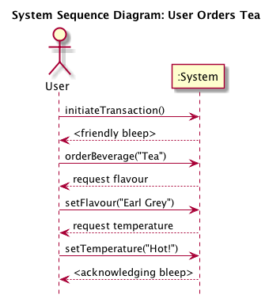
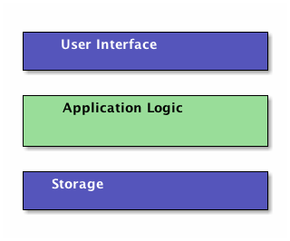
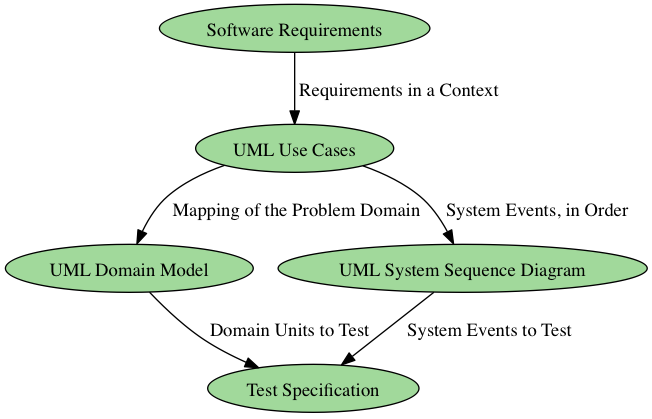

Concepts and Events
Table of Contents
1 About This Sprint
This sprint introduces a system analysis view of the real world, and describes how to use the UML use cases as a means for finding out what is relevant to model from the real world for the system you are designing.
2 User Stories covered in this Sprint
- As a software designer I want to document my understanding of the problem domain so that I can easily transform this into an object oriented software system.
- As a software designer I want to understand how users plan on interacting with the system so that I can design the right API endpoints.
- As a product manager I want to make sure that fixed bugs do not re-appear so that I can build the product incrementally.
3 Introduction
A large part of the allure of object oriented programming is because it so closely mimics the real world. We are used to seeing objects around us, and are used to viewing objects in terms of what we can do to them. Another important realisation in object oriented programming is the notion that each object in the real world may carry its own state. The state of a real world object may be many things such as its position, its owner, its colour(s), whether it is whole or broken, how it is broken, and so on. But ultimately all of these properties of one object are unique for that particular object, and we do not expect it to be in any other way. Before object oriented programming, this was quite a challenge to achieve in a programming language.
Object oriented programming enabled software developers to analyse problems in terms of the involved real world entities, or Concepts. This shortens the gap between the software you write and the domain you are representing with this software, since concepts in the real world have a corresponding software representation. If the real world concept can do a certain thing or has a certain property, your software representation should probably also be able to do this functionality or or have this property.
The inverse is not necessarily true, though. You will be adding stuff to your software representations just to make them work together as a software system, and this stuff need not have a corresponding real world representation. A real world rucksack does for example not have any need for an std::set<Junk>, and Swiper does not need to be aware that he can form a relation to the rucksack before he actually steals it.
3.1 Concepts, Classes and Objects
An important starting point for building an object oriented system is thus to look at the real world and see what objects there are. From these objects we try to find out what common types they belong to (I will refrain from an excursion to Plato and his idea-world). Those are the Concepts that we should model.
We then look for relations between the concepts and describe them as clearly as we can. These relations will help us later on when we see how concepts (or objects) interact with each other to solve a particular task. This also helps when we decide on the scope of the product, i.e. when we decide what is within what the system should do, and what is outside of what the system should do.
Concepts may have attributes, or properties. For example a Person may have a name, and an address. We add those too.
Concepts are similar to Classes as you are used to them in programming, but they are not the same! As stated earlier, a class contains all sorts of methods and attributes that have to do with being a software entity (such as a print() method, well defined types of all the attributes, collections of relations to other classes, etc. A Concept, on the other hand, should focus solely on the concepts, attributes, and relations that exist in the real world.
Similarly to classes, a concept can be seen as the archetype of a set of objects. For example, if you have a Volvo 244, a Ford Fiesta, and a Wolkswagen Golf, these are examples of the concept Car. If you construct software to, say, keep track of these cars, you may also have a class Car, with the instances Volvo244:Car, FordFiesta:Car, and VWGolf:Car. Of course it will be impractical to keep track of the instances, or objects, like this so you may instead have a carArray:Car[] or a std::set<car> to maintain your collection of cars. This would also mean that the car brands will need to be represented as attributes of the car instead of encoded in the name of the software variable:
std::set<Car*> myCars; myCars.insert(new Car("Volvo 244")); myCars.insert(new Car("Ford Fiesta")); myCars.insert(new Car("VolksWagen Golf"));
Because of the similarities to classes there is no need to invent a new type of diagram for the conceptual model. Instead, you will re-use the notation for a Class Diagram to model your concepts, their relations, and their attributes.
As you continue with your analysis, you will learn more about the domain and the concepts in the domain, and will be adding this new knowledge into your conceptual model so that you eventually have a head start on creating your class diagram (but I get ahead of myself: We’re not there yet).
3.2 Don’t bite off more than you can chew!
Remember that this is still early days. You have just started coming to grips with what you should be doing and, above all, you have not produced a single thing which has any value to the customer yet! Therefore you should not try to model the whole world and all the concepts in the world. You should stick to the immediate problem domain (which is why we also refer to the conceptual model as a Domain Model).
What’s more, your requirements will change, you will change how you perceive the domain, and you will learn and want to add more as you go along. Even worse, if you try to model everything and everything perfectly, you will be bogged down in this step forever in a form of writers’ block, which does not deliver value to the customer.
The solution and the agile way is thus to only model what is immediately useful for you. This sounds like simple advice, but what is immediately useful?
A good starting point is your UML use cases. The use cases you have selected for the current iteration represent a subset of the complete domain, and are a reasonaby good place to start. The use cases contains plenty of information about different domain concepts and how users interact with them, and so will give you a good starting point. Going through category lists of common types of concepts you can also easily find such concepts from your use cases.
Personally, I would also suggest that you look ahead a little so that you are at least aware of what you are going to do in the coming iterations as well, so that you don’t paint yourself into a corner. But that’s probably just me being stuck in a plan-driven design philosophy.
3.3 Events and System Events
Another thing which we get from the use cases is our API endpoints. Of all the things that a user may do around the system, what does actually the system have to react to? We call those things System Events. Since they may come in a particular order, we can view them as a sequence of system events, and this we model in a System Sequence Diagram.
Consider the following course of events from a UML use case:
| User | System |
|---|---|
| 1. User approaches replicator. | 2. System bleeps friendlily. |
| 3. User orders Tea. | 4. System asks “which flavour?” |
| 5. User decides “Earl Grey” | 6. System asks “what temperature?” |
| 7. User decides “Hot!” | 8. System bleeps acknowledgingly and delivers the ordered beverage. |
The system events we may generate from this are:
- initiateTransaction()
- orderBeverage(“Tea”)
- setFlavour(“Earl Grey”)
- setTemperature(“Hot!”)
Notice that we express these events as method calls. Also note that the order matters. “Hot Earl Grey Tea” will, in this system, not work.
Expressing this in a system sequence diagram:

Figure 3: System Sequence Diagram
In a System Sequence Diagram we are viewing the system as a black box. We put things into the box, and stuff comes out, but we have no clue what’s going on inside. That’s why we only model actors external to the system and the system itself. We do not open up the :System box to see what’s going on inside, but are only interested in events to and from the system as a whole.
We will come back to Sequence Diagrams later, where we use the same notation to express what’s going on inside the system.
3.4 Attaching a User Interface
So what’s the point of expressing this as method calls? We’re still just doing analysis, aren’t we?
First, there is no clear-cut line where we can say “this is analysis and that is design”. As you learn more about the problem and the problem domain you begin to realise not only what you should build but also how to build it, and so you will be moving into a design space. But you will just as quickly realise that you need more information, and will go back to analysing the problem. Object-oriented software design is very much this movement back and forth between problem analysis and solution design, made easy in particular because of the intentional similarity between the real world and the paradigm of modelling the objects in the real world.
Second, by modelling the system events as method calls we are creating a powerful entry point for our system. I will need to diverge a bit into software architecture in order to explain this further. Please bear with me. Almost all applications with some form of user interaction can be split into three parts, or layers:

Figure 4: Layered Architecture Style
Each layer has an API, a set of methods which we can call to access it. In the case of the user interface, this may consist of buttons and text boxes, but if you are creating a web application, it may also include the API endpoints such as https://www.your.server/User/userid to access the User profile for userid, as well as landing pages for your AJAX calls. The point is that you only focus on the interface of the layer you are going to connect to. So if you are an end-user, you only need to worry about the user interface. If you “are” a user interface, you only need to worry about the API for the Application Logic Layer.
For the Application Logic layer, the methods in the API are the system events from your System Sequence Diagram.
This is what makes it so useful that you have already modelled them as method calls. You have now also documented your API; the methods you may call, the system responses, and the order (if any) that the methods must be called.
Moreover, you have done this without having decided how you are going to build your user interface. You are still free to write a desktop GUI application, a mobile phone app (where you have still left the choice open between IOS and Android – at least in theory), or a web application. You may even write your GUI in something esoteric like Unity, and your system sequence diagrams would still look the same.
3.5 Testing
In this sprint, we have introduced two new models; domain models and system sequence diagrams. Both of these are useful for testing purposes. The domain model shows you how you think the problem domain functions. When constructing your tests, this is a better starting point than what you eventually end up implementing. More importantly, the domain model divides your problem domain into smaller entities, concepts, that are possible to unit test. Later on, you can combine your already tested units and run integration tests to make sure the units work together.
Your system sequence diagrams tell you what API endpoints you have in the system. These are an excellent starting point for writing your regression tests. Consider the Layered architecture model in Figure 4 once more. Remember that we specified the API for the Application Logic in the System Sequence Diagram? So why not just “push” the user interface to one side and attach a testing interface there instead? Why not indeed.

Figure 5: Adding a Testing Interface to the Layered Architecture
In one go you have enabled automated testing of your application. Technically, you can (and should) do this on top of the user interface too, but this is easier to get in place.
3.6 Summary
We are thus able to start building a chain of analysis efforts and UML diagrams, where what we learn in one diagram is put to use when creating the next one, as illustrated in Figure 6. Of course, this chain is equally valuable going backwards: In order to find out more about a particular test case and why it is written the way it is, you go back to the UML use case. If this is not enough, you look at the involved requirements, or – via the requirements – contact the original source of the requirement to ask further questions.

Figure 6: A Chain of Design Elements.
4 Learning Material
4.1 Book Chapters
- C. Larman, Applying UML and Patterns, 3rd Edition, Chapters:
- Iteration 1 – Basics
- Domain Models
- System Sequence Diagrams
4.2 Screencasts
4.3 Further Reading
5 Experiential Learning
5.1 Sprint Test Plan
Go through the user stories for this sprint and make sure you have a clear understanding of how to solve each of them.
Revisit and update your risks and contingencies section.
Add and/or revise the following items to your glossary:
- Concept
- Class
- Instance
- Object
- Object state
- Class Diagram
- Domain Model (Also: Conceptual Model)
- System Sequence Diagram
- System Event
- Black Box
- Software Architecture
- Layered Software Architecture
- Model-View-Controller Software Architecture
- Pipes-and-Filters Software Architecture
- Unit Testing
- Regression Testing
- Integration Testing
Make sure you understand what each item is, the notation for them, and how to use them either in isolation or together with the other concepts.
5.2 Update Course Backlog
What’s the next step? What do you need to do in order to understand how to implement the system based on your system sequence diagrams?
Are there any other questions that you want answered? Add them, along with a brief strategy for how to find an answer.
6 Sprint Acceptance Tests
You are done with this sprint when:
- You understand how to use your UML use cases to identify system events, that will trigger a series of interactions inside the system.
- You understand how to start identifying candidate entities for this internal structure through the use of a Domain Model.
You may also have
- Updated your Sprint Test Plan
- Updated your Course Backlog